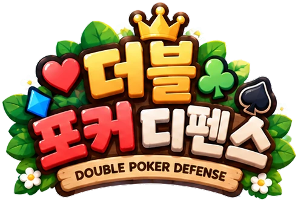

DOUBLE POKER DEFENSE

한 장의 행운, 나만의 작은 군단.
가로로 돌리면 더 넓게 즐길 수 있어요.
PLAY TOGETHER
함께할 세상을 미리 만나봐요
지금은 혼자 지도를 둘러볼 수 있어요.
온라인 같이하기는 준비 중이에요. 맵 미리보기에서는 다른 플레이어와 연결되지 않아요.
READY FOR ADVENTURE
혼자하기어떤 모험을 떠날까요?
난이도를 고르고, 나만의 카드 군단을 만들어보세요.
오늘은 어떤 카드가 기다릴까요?모두에게 같은 카드 · 보통 난이도